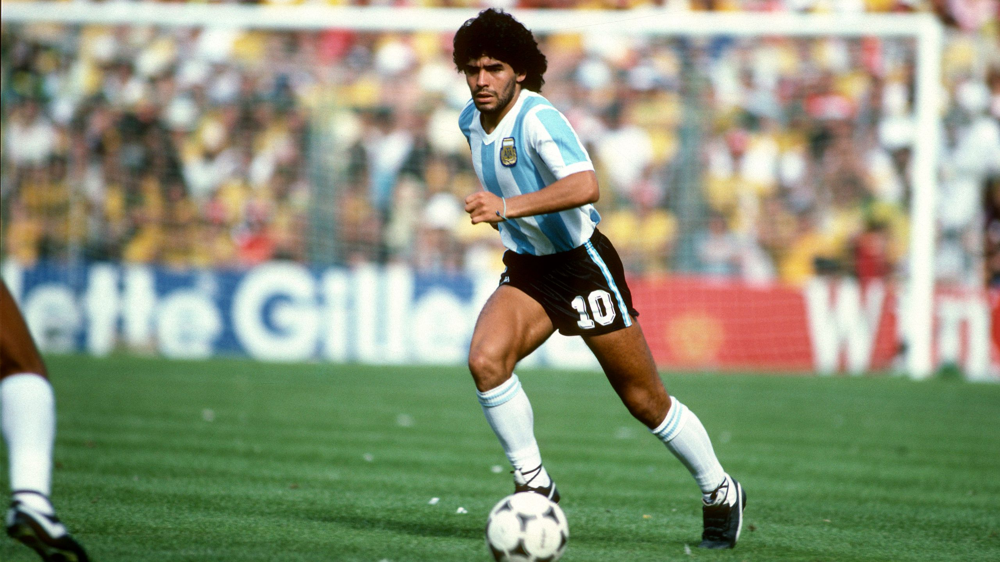
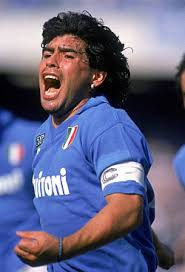
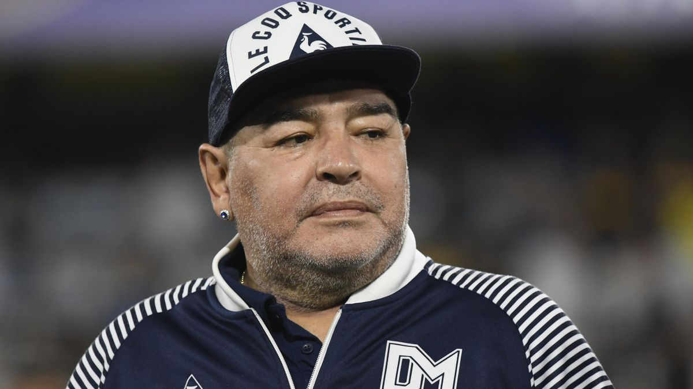

Diego Maradona
La sua vita e la sua carriera






🕐 La sua vita
Maradona è cresciuto in un quartiere povero di Buenos Aires. La sua passione per il calcio si è manifestata sin da bambino, quando iniziò a giocare nelle strade del suo quartiere. La sua famiglia lo ha sempre supportato e ha iniziato a giocare professionalmente a 16 anni con l'Argentinos Juniors. Nonostante i difficili inizi, il talento naturale e la dedizione lo portarono rapidamente ai vertici del calcio mondiale.
⚽ La sua carriera
Maradona ha giocato per diversi club importanti, tra cui il Boca Juniors in Argentina, il Barcellona in Spagna e il Napoli in Italia. Con il Napoli ha raggiunto l'apice della sua carriera, portando la squadra alla vittoria di due scudetti (1990 e 1991). Ha anche guidato la nazionale argentina alla vittoria della Coppa del Mondo nel 1986, con prestazioni memorabili come il "Gol del secolo" e la "Mano de Dios".
La sua carriera è stata segnata da infortuni, problemi personali e controversie extracalcistiche, ma rimane uno dei più grandi giocatori della storia del calcio. Il suo impatto sul gioco è stato rivoluzionario: ha elevato il Napoli da una squadra di media classifica a una potenza calcistica europea.
🏆 Principali successi
- Coppa del Mondo 1986 (Argentina)
- 2 Scudetti con il Napoli (1990, 1991)
- Coppa UEFA 1989 (Napoli)
- Pallone d'Oro 2 volte
- Miglior giocatore del Mondiale 1986